워드프로세서-(구-1급) (2009-10-11 기출문제)
1과목: 워드프로세싱 일반
1. 다음 중 반복되는 작업을 쉽게 하기 위한 기능과 가장 거리가 먼 것은?
- 상용구
- 매크로
- 수식입력
- 메일머지
(정답률: 74%)

2. 다음 중 공문서 항목 구분 시 다섯째 항목의 항목 구분으로 사용할 수 있는 기호는?
- ①, ②, ③, ...
- (1), (2), (3), ...
- 1, 2, 3, ...
- 1), 2), 3), ...
(정답률: 76%)
3. 다음 중 아래 설명에 해당하는 용어로 옳은 것은?
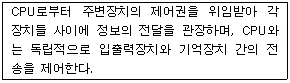
- 레지스터(Register)
- 와일드카드(Wild Card)
- 채널(Channel)
- 포매터(Formatter)
(정답률: 53%)
4. 다음의 단위 중에서 프린터와 관계가 없는 것은?
- TPI(Track Per Inch)
- CPS(Character Per Second)
- DPI(Dot per Inch)
- PPM(Page Per Minute)
(정답률: 53%)
5. 다음 중 아래 문단 모양과 가장 관련이 있는 것은?
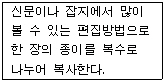
- 래그드(Ragged)
- 들여쓰기(Indent)
- 센터링(Centering)
- 데시멀 탭(Decimal Tab)
(정답률: 56%)
6. 다음 중 워드프로세서에서 산출된 출력 값을 특정 프린터 모델이 요구하는 형태로 번역해 주는 소프트웨어는?
- 플러그 인(Plug-In)
- 하드 카피(Hard Copy)
- 프린터 드라이버
- 컴파일러(Compiler)
(정답률: 57%)
7. 다음 중 KS X 1001 한글 완성형 코드에 대하여 올바르게 설명한 것으로만 짝지어진 것은?
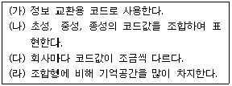
- (가), (라)
- (나), (다)
- (다), (라)
- (가), (나)
(정답률: 62%)
8. 다음 중 워드프로세서의 기능에 대한 설명으로 옳은 것은?
- 입력기능은 문서에 들어있는 문자나 그래픽의 형태, 크기, 위치 등을 지정하는 것을 의미한다.
- 표시기능은 입력된 문서나 편집 중인 문서를 프린터를 통해 인쇄하여 주는 기능을 의미한다.
- 저장기능은 파일 이름을 지정하여 문서를 주기억장치에 저장하는 기능이다.
- 문서에 들어가는 내용은 주로 한글이나 영문, 특수문자 등의 문자나 사진, 도형 등의 그래픽이 있다.
(정답률: 50%)
9. 다음 중 캐시 메모리(Cache Memory)에 대한 설명으로 옳지 않은 것은?
- 중앙처리장치와 주기억장치 사이에서 실행속도를 높이기 위해 사용되는 기억장치이다.
- 접근속도가 빠르나 값이 비싼 단점이 있다.
- 주로 SRAM을 사용한다.
- 저장된 내용을 읽을 수는 있으나 변경할 수 없다.
(정답률: 68%)
10. 다음 중 문단 여백과 편집 용지 여백에 대한 설명으로 옳지 않은 것은?
- 편집 용지 여백을 주면 실제로 글이 입력되는 부분은 이 편집 용지 여백을 제외한 부분부터 시작된다.
- 문단 여백이란 편집 용지 여백을 제외하고 또 다시 여백을 주는 것을 의미한다.
- 두문 및 미문이 인쇄될 영역의 크기는 문단 여백에서 설정하여 준다.
- 바꾸고자 하는 문단에 커서를 두고 적절한 문단 여백을 설정하면 해당 문단의 여백만 변경된다.
(정답률: 45%)
11. 다음 중 워드프로세서의 기능을 수행하는 장치에 대한 설명으로 옳지 않은 것은?
- 입력장치에는 스캐너, 마우스 등이 있다.
- 표시장치에는 바코드 판독기, LCD 등이 있다.
- 출력장치에는 플로터, 프린터 등이 있다.
- 저장장치에는 하드디스크, USB 메모리 등이 있다.
(정답률: 65%)
12. 공문서 서식설계의 일반원칙이 아닌 것은?
- 서식은 법령에 의하여 서식에 날인하도록 정한 경우를 제외하고는 서명이나 날인을 선택적으로 할 수 있도록 설계하여야 한다.
- 서식은 글씨의 크기, 항목간의 간격, 기재할 여백의 크기 등을 균형있게 조절하여 기입항목의 식별이 쉽도록 설계 하여야 한다.
- 서식에는 행정기관의 이미지 제고를 위하여 가능한 한 행정기관의 로고, 상징, 마크 또는 홍보 문구 등을 표시하지 않는다.
- 서식은 특별한 사유가 있는 경우를 제외하고는 별도의 기안문 및 시행문을 작성하지 아니하고 서식 자체를 기안문 및 시행문으로 갈음할 수 있다.
(정답률: 66%)
13. 다음 중 전자출판에 사용되는 용어에 관한 설명으로 옳지 않은 것은?
- 리터칭(Retouching) : 기존의 그림을 다른 형태로 새롭게 변형, 수정하는 작업을 의미한다.
- 오버프린터(Over Print) : 대상체의 컬러가 배경색의 컬러보다 옅을 때에 발생하는 현상이다.
- 필터링(Filtering) : 작성된 그림을 필터 기능을 이용하여 여러 가지 형태의 새로운 이미지로 탈바꿈시켜 주는 기능이다.
- 클립아트(Clip Art) : 작업문서에 자주 사용되는 다양한 그림을 모아 둔 작은 그림의 모음집이다.
(정답률: 70%)
14. 다음 중 문자의 외곽선에 대한 정보를 사용하여 문자를 표시하는 방식과 관계없는 글꼴은?
- 비트맵(Bitmap)
- 벡터(Vector)
- 트루타입(True Type)
- 포스트스크립트(Post Script)
(정답률: 54%)
15. 다음 중 컴퓨터 등 정보처리 능력을 가진 장치에 의하여 전자적인 이미지 형태로 사용되는 관인을 무엇이라고 하는가?
- 전자이미지관인
- 전자관인
- 전자이미지서명
- 전자문서
(정답률: 73%)
16. 다음 중 파일의 확장자(Extension)에 대한 설명으로 옳지 않은 것은?
- 파일의 종류나 형식을 나타낸다.
- HWP, AVI, EXE, TXT 등이 있다.
- 파일명에서 확장자는 점(.)으로 구분한다.
- 확장자는 지울 수 없으며, 8자까지 사용가능하다.
(정답률: 76%)
17. 다음 중 전자출판에서 개체(Object) 처리 기능에 관한 설명으로 적절하지 않은 것은 ?
- 여러 가지의 개체들을 서로 연결하거나 분해해서 사용할 수 있다.
- 클립아트(Clip Art) 형태의 그림을 사용할 수 있다.
- 각각의 그림이나 파일을 개별적인 요소로 구분하여 처리한다.
- 작성된 그림을 여러 가지 새로운 형태의 이미지로 바꿔 주는 기능이다.
(정답률: 59%)
18. 다음 중 워드프로세서의 화면표시 기능 중 격자에 관한 설명으로 옳은 것은?
- 탭 설정 여부나 오른쪽과 왼쪽의 여백, 들여쓰기, 내어 쓰기, 눈금단위 등을 나타내는 곳이다.
- 자주 사용하는 메뉴를 아이콘 형태로 구성하여 빠르고, 편하게 작업할 수 있도록 한 곳이다.
- 그림을 그릴 때 정확히 간격을 맞추어 세밀한 편집을 할 수 있도록 편집화면에 가로, 세로로 나타내는 기준점이다.
- 작업할 수 있는 모든 명령들을 메뉴 형태로 구성해 놓은 것이다.
(정답률: 55%)
19. 다음 중 서로 상반되는 의미를 지닌 교정부호로 짝지어진 것은?
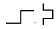
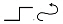
(정답률: 77%)
20. 다음 중 문서의 분량이 증가될 수 있는 교정부호들로 올바르게 짝지어진 것은?
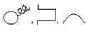
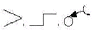
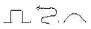
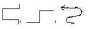
(정답률: 75%)
2과목: PC 운영 체제
21. 한글 Windows XP에서 새 폴더를 만드는 방법으로 옳지 않은 것은?
- 바탕 화면에서도 새 폴더를 만들 수 있다.
- Windows 탐색기를 사용하여 원하는 드라이브나 폴더 내에 새 폴더를 만들 수 있다.
- [제어판]의 [프로그램 추가/제거]를 이용하여 원하는 드라이브나 폴더 내에 새 폴더를 만들 수 있다.
- 임의의 드라이브 창이나 폴더 창 내의 바탕 부분에서 바로가기 메뉴를 이용하여 새 폴더를 만들 수 있다.
(정답률: 69%)
22. 다음 중 한글 Windows XP에 관한 설명으로 옳지 않은 것은?
- [Windows Update] 기능을 사용하여 Windows를 최신 정보로 유지할 수 있다.
- [시스템 복원] 기능을 사용하여 시스템 사용에 문제가 생기는 경우에 컴퓨터를 이전 상태로 복원할 수 있다.
- [시스템 도구]의 여러 가지 기능을 사용하여 컴퓨터 정보를 볼 수 있으며, 문제를 진단할 수 있다.
- [디스크 검사]를 사용하여 시스템 바이러스를 발견하고 삭제할 수 있다.
(정답률: 62%)
23. 한글 Windows XP에서 바탕화면에 있는 [내 컴퓨터]와 관련된 설명으로 옳지 않은 것은?
- [내 컴퓨터]의 바로가기 아이콘은 바탕화면에서만 만들 수 있다.
- [내 컴퓨터] 아이콘의 이름은 바꿀 수 있다.
- [내 컴퓨터]의 바로가기 메뉴에서 [속성]을 선택하면[시스템 등록 정보] 창이 표시된다.
- [내 컴퓨터] 창의 하위 폴더 창을 이용하면 파일이나 폴더의 이동, 복사, 삭제 등을 할 수 있다.
(정답률: 55%)
24. 한글 Windows XP의 [휴지통]에 대한 설명으로 옳지 않은 것은?
- 명령 프롬프트 모드에서 삭제한 파일은 휴지통에서 복원 메뉴로 복원할 수 없다.
- 각각의 드라이브마다 휴지통의 크기를 다르게 지정할 수 있다.
- 플로피 드라이브에서 삭제한 파일은 휴지통에서 복원 메뉴로 복원 할 수 있다.
- 휴지통의 등록정보에서 휴지통의 크기를 지정할 수 있다.
(정답률: 58%)
25. 한글 Windows XP의 [내게 필요한 옵션] 등록정보 창에 있는 [키보드]탭에서 설정 가능한 항목으로 옳지 않은 것은?
- 고정키를 사용하면 동시에 두 개의 키를 누르기가 힘든 경우 [Shift], [Ctrl] 또는 [Alt] 키를 눌려 있는 상태로 고정할 수 있다.
- 필터키를 사용하면 짧은 시간동안 눌려진 키 또는 빠르게 반복되는 키 입력을 무시하도록 하거나 키의 반복 속도를 느리게 지정할 수 있다.
- 토글키를 사용하면 [Caps Lock], [Num Lock], [Scroll Lock] 키를 누를 때 신호음을 들을 수 있도록 지정할 수 있다.
- 바로가기 키를 사용하면 Windows에서 사용하는 모든 바로가기 키 설정을 변경할 수 있다.
(정답률: 52%)
26. 한글 Windows XP의 사용자 계정 중에서 [제한된 계정]의 사용자 권한에 관한 설명으로 옳지 않은 것은?
- 컴퓨터에서 [제한된 계정]을 가진 사용자가 적어도 한 명은 반드시 있어야 한다.
- 자신의 계정 그림을 변경하고 자신의 암호를 만들고 변경하고 삭제할 수 있다.
- 소프트웨어 또는 하드웨어를 설치할 수는 없지만 컴퓨터에 이미 설치된 프로그램에 액세스할 수 있다.
- 자신의 계정 이름 및 계정 유형을 변경할 수 없다.
(정답률: 49%)
27. 한글 Windows XP의 [보조프로그램]에 있는 [시스템 정보]에 대한 설명으로 옳지 않은 것은?
- [시스템 정보]는 로컬 및 원격 컴퓨터의 구성 정보를 수집하고 표시한다.
- 내 시스템의 하드웨어 리소스와 소프트웨어 환경 등을 보여준다.
- [파일] 메뉴의 [내보내기]를 이용하여 시스템 정보를 텍스트 파일로 저장할 수 있다.
- 구성 요소 항목에는 시스템 드라이버 등 소프트웨어의 파일명, 상태 등이 표시된다.
(정답률: 28%)
28. 한글 Windows XP의 바탕화면에 있는 바로 가기 아이콘에 관한 설명으로 옳지 않은 것은?
- 바로가기 아이콘을 삭제할 경우에 원본 파일은 삭제되지 않는다.
- 바로가기 아이콘은 원본 파일에 대한 연결 정보를 가지고 있다.
- 바로가기 아이콘을 만들면 원본 파일에 대한 복사가 수행된다.
- 바로 가기 아이콘은 일반 아이콘과 구별하기 위해 왼쪽 아래에 화살표가 표시된다.
(정답률: 52%)
29. 한글 Windows XP에서 연결 프로그램에 관한 설명으로 옳지 않은 것은?
- 파일의 확장자에 따라 연결 프로그램이 결정된다.
- 확장자가 다른 파일들은 각각 다른 연결 프로그램으로 지정되어야 한다.
- 실행 파일 이외에 연결 프로그램이 지정되어 있지 않은 파일은 사용자가 연결 프로그램을 지정해야 한다.
- 파일에 연결된 프로그램은 사용자가 바꿀 수 있다.
(정답률: 57%)
30. 한글 Windows XP에서 프린터의 스풀에 관한 설명으로 옳지 않은 것은?
- 스풀을 사용하면 인쇄 속도가 아주 빨라진다.
- 스풀 기능을 사용하면 프린터가 인쇄 중이라도 다른 응용프로그램을 실행할 수 있다.
- 스풀은 기본 원리는 인쇄 내용을 먼저 하드디스크에 저장하고 인쇄하는 것이다.
- 스풀의 설정은 해당 프린터 아이콘의 [속성] 창에서 설정할 수 있다.
(정답률: 58%)
31. 다음 중 한글 Windows XP에서 파일이나 폴더의 검색을 위한 [검색 결과] 창에서 할 수 있는 작업으로 옳지 않은 것은?
- 찾으려는 파일이나 폴더 이름을 입력하여 해당 파일이나 폴더를 검색할 수 있다.
- 시스템에 설치된 하드웨어 이름을 입력하여 해당 드라이버를 검색할 수 있다.
- 검색된 파일은 삭제할 수 있다.
- [휴지통]을 검색하여 표시된 파일은 복원될 수 있다.
(정답률: 39%)
32. 한글 Windows XP의 [보조프로그램]에 있는 [그림판] 프로그램에 관한 설명으로 옳지 않은 것은?
- 스캐너로 스캔한 그림 파일을 불러와 편집할 수 있다.
- OLE 기능을 이용하여 다른 그래픽 저작도구로 만든 그림을 개체 삽입할 수 있다.
- 전자 메일을 사용하여 이미지 보내기를 할 수 있다.
- 텍스트 입력시 다양한 글꼴을 지원한다.
(정답률: 50%)
33. 다음 중 한글 Windows XP의 [보조프로그램]에 있는 [계산기] 프로그램에 관한 설명으로 옳지 않은 것은?
- 자릿수 구분 단위를 사용할 수 있다.
- [일반용]과 [공학용] 보기를 사용할 수 있다.
- 2진수, 8진수, 10진수, 16진수를 사용할 수 있다.
- 2차 방정식을 직접 입력하여 계산할 수 있다.
(정답률: 61%)
34. 다음 중 한글 Windows XP의 [도움말 및 지원 센터] 창에서 할 수 있는 작업으로 옳지 않은 것은?
- 상대방이 사용자 컴퓨터에 연결할 수 있도록 원격 지원을 사용하여 초대할 수 있다.
- 한글 20⑤, 포토샵 등과 같은 응용 프로그램을 [도움말 및 지원]을 통하여 검색하고 실행시킬 수 있다.
- Windows Update를 사용하여 Windows를 최신 정보로 유지할 수 있다.
- Windows XP와 호환되는 하드웨어 및 소프트웨어를 찾을 수 있다.
(정답률: 46%)
35. 한글 Windows XP에서 작업 표시줄에 표시할 수 있는 [입력 도구 모음]에 관한 설명으로 옳지 않은 것은?
- 키보드의 숫자 패드로 마우스 포인터를 움직이도록 설정 할 수 있다.
- 입력된 한글의 한자 변환이 가능하다.
- 필기체 인식을 하는 확장 입력기를 사용할 수 있다.
- 키보드를 이용하여 입력하는 경우에 한/영 전환을 할 수 있다.
(정답률: 54%)
36. 한글 Windows XP의 [제어판]에 있는 [키보드]를 이용하여 설정할 수 있는 기능은?
- 키보드의 드라이버 소프트웨어를 업데이트할 수 있다.
- 키보드의 인터럽트 요청 값을 수정할 수 있다.
- 키보드 자판 종류를 두벌식에서 세벌식으로 변경할 수 있다.
- 키보드 입력에 사용되는 커서의 모양을 변경할 수 있다.
(정답률: 32%)
37. 한글 Windows XP를 사용하는 도중에 발생하는 문제를 해결하기 위한 방법으로 가장 옳은 것은?
- 디스크 공간이 부족하다면 [바이러스 검사]를 사용하여 디스크 오류를 점검한다.
- 메인 메모리가 부족하여 프로그램을 실행할 수 없는 경우에는 [디스크 검사]를 실행하여 디스크 공간을 늘린다.
- 디스크 공간이 부족할 경우에는 열려진 프로그램이나 문서 중 불필요한 것을 종료한다.
- 하드 디스크의 액세스 속도 문제일 경우에는 [디스크 조각 모음]을 실행하여 단편화를 제거한다.
(정답률: 55%)
38. 다음 중 한글 Windows XP에서 [무선 네트워크 설정 마법사]에 대한 설명으로 옳지 않은 것은?(문제 오류로 실제 시험장에서는 1, 2번이 정답 처리 되었습니다. 여기서는 2번을 정답 처리 합니다.)
- [시작]-[모든 프로그램]-[통신]-[무선 네트워크 설정 마법사]를 선택하여 실행한다.
- USB 플래시 드라이브를 사용하여야만 무선 네트워크 설정을 수행할 수 있다.
- [시작]→[제어판]→[무선 네트워크 설정 마법사]를 선택하여 실행한다.
- AP(Access Pointer)가 필요하다.
(정답률: 73%)
39. 한글 Windows XP의 [인터넷 프로토콜(TCP/IP) 등록정보] 창에서 설정하는 [서브넷 마스크]에 관한 설명으로 옳은 것은?
- IP 주소로 DNS 이름을 확인하는데 사용한다.
- 별개의 IP 네트워크 세그먼트를 연결하는 라우터이다.
- IP 주소와 결합하여 사용자 컴퓨터가 속한 네트워크 세그먼트를 식별하는데 사용한다.
- 네트워크 액세스 서버로부터 동적으로 IP 주소를 지정한다.
(정답률: 52%)
40. 한글 Windows XP의 네트워크 드라이브 연결에 관한 내용으로 옳지 않은 것은?
- 로그온 할 때마다 연결된 드라이브에 다시 연결하려면 [네트워크 드라이브 연결]창에서 [로그온 할 때 다시 연결] 확인란을 선택한다.
- 해당 호스트 컴퓨터가 사용 가능하지 않아도 연결된 드라이브를 사용할 수 있다.
- 네트워크 드라이브는 Z부터 A까지 문자가 지정되지만 하드 드라이브 및 이동식 저장소 장치와 같은 로컬 드라이브는 A부터 Z까지 지정된다.
- 해당 드라이브의 연결을 끊은 다음에 새 드라이브 문자로 다시 지정하여 컴퓨터나 공유 폴더를 다른 드라이브 문자로 지정할 수 있다.
(정답률: 45%)
3과목: 컴퓨터 및 정보활용
41. 다음 중 동일한 디스크 시스템을 하나 더 운영하여 하나의 디스크 시스템에서 오류가 발생하였을 경우 다른 디스크 시스템으로 신속하게 전환함으로써 시스템 장애시간을 최소화하는 기법을 의미하는 용어는?
- Spooling
- Multitasking
- Buffering
- Mirroring
(정답률: 43%)
42. 인쇄가 전혀 되지 않거나 부분적으로 인쇄되는 경우 처리해야 할 조치 방법으로 가장 적절하지 않은 것은?
- 인쇄 기종의 선정이 알맞은지 확인한다.
- 해당 프린터의 [등록정보]에서 설정이 제대로 되어 있는지 확인하고[시험 인쇄]를 해 본다.
- 프린터 케이블의 연결 상태가 제대로 되어 있는지 확인한다.
- 프린터를 최신의 것으로 교체한다.
(정답률: 72%)
43. 다음 중 여러 가지 코드에 대한 설명으로 옳지 않은 것은?
- 패리티 비트는 정보 전송 시 에러를 검출하기 위하여 사용한다.
- Gray 코드는 연속하는 수를 이진표현으로 하였을 경우 인접하는 두 가지 수의 코드가 1비트만 다르게 만들어진 이진코드이다.
- BCD코드는 자리에 대한 가중치가 있으며 8421코드라고도 한다.
- Access-3(3초과)코드는 자리에 대한 가중치가 있으며 정보전송에 사용한다.
(정답률: 42%)
44. 다음 중 운영체제의 커널(Kernel)에 대한 설명으로 옳지 않은 것은?
- 컴퓨터의 하드웨어와 직접 상호작용하는 모듈
- 제어 프로그램 중에 주기억장치에 상주하는 모듈
- 운영체제를 구성하는 프로세스와 운영체제의 제어 아래서 수행하는 프로그램에 대한 자원할당을 수행
- ROM BIOS에 저장되어 입출력을 수행하는 모듈
(정답률: 46%)
45. 다음 중 인출 사이클(Fetch Cycle)에 대한 설명으로 가장 적합한 것은?
- 데이터를 기억장치로부터 읽어 들여 명령어 레지스터에 저장한다.
- 현재 수행중인 명령어를 중단시킨다.
- 데이터를 기억장치에서 읽어내어 실행시킨다.
- 간접주소 모드인 경우 유효번지를 읽기 위해 기억장치에 한번 더 접근한다.
(정답률: 38%)
46. 인터넷을 통한 해킹과 관련하여 데이터의 무결성(integrity)에 대한 위협 요소에 해당되지 않은 것은?
- 사용자 데이터 변조
- 메모리 훼손
- 전송 메시지 변조
- 네트워크 구성 정보 유출
(정답률: 46%)
47. 다음은 무엇에 대한 설명인가?
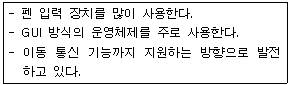
- 노트북컴퓨터
- 마이크로컴퓨터
- 워크스테이션
- PDA
(정답률: 55%)
48. 다음 중 인터넷 주소인 IP주소에 대한 설명으로 옳지 않은 것은?
- IP주소는 인터넷에 연결된 모든 컴퓨터를 구분하기 위한 인터넷 주소이다.
- 현재의 IPv4체제는 숫자로 4비트씩 4부분이며, 16비트로 구성된다.
- 0에서 255사이의 10진수로 표시하며, 세 개의 점으로 구분한다.
- 네트워크와 호스트 부분으로 구성되며, A에서E 까지 5개 클래스로 구분된다.
(정답률: 53%)
49. 다음 괄호 안에 들어갈 말이 순서대로 올바르게 짝지어진 것은?
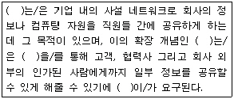
- 인터넷, 인트라넷, VPN(가상사설망), 전자서명
- 인트라넷, 엑스트라넷, VPN(가상사설망), 보안
- 인트라넷, 인터넷, 라우터, 암호화
- 인트라넷, 인터넷, 라우터, 전자서명
(정답률: 57%)
50. 다음은 어느 시스템을 설명한 것인가?
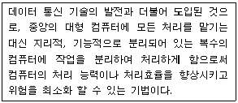
- 온라인 시스템(On - Line System)
- 일괄 처리 시스템(Batch Processing System)
- 시분할 시스템(Time Sharing System)
- 분산 처리 시스템(Distributed Processing System)
(정답률: 60%)
51. 다음 중 RISC 프로세서에 대한 설명으로 가장 거리가 먼 것은?
- 하버드 구조(Harvard Architecture)를 기반으로 설계된 방식이다.
- 가변길이 명령어 형식을 사용한다.
- 상대적으로 적은 수의 명령어 세트를 가지고 있다.
- 단일 사이클에 한 개의 명령어를 수행한다.
(정답률: 36%)
52. 다음 중 통신망의 종류와 특징에 대한 설명으로 옳지 않은 것은?
- LAN - 제한된 지역 내에 있는 독립된 컴퓨터 기기들로 하여금 서로 통신이 가능하도록 하는 데이터 통신 시스템이다.
- MAN - 도시 전체를 대상으로 구축하는 네트워크이다.
- WAN - 데이터, 음성, 영상 정보의 단거리 전송 서비스를 제공하는 네트워크이다.
- ISDN - 하나의 통신회선으로 문자, 음성, 이미지, 동영상 등의 다양한 데이터를 통합된 통신 서비스로 제공하는 디지털 네트워크이다.
(정답률: 48%)
53. 다음 중 바이러스에 감염된 파일을 치료하거나 예방해 주는 백신 프로그램으로 가장 거리가 먼 것은?
- RSA
- V3
- 노턴 안티바이러스
- 바이로봇
(정답률: 59%)
54. 다음 중 하나 또는 여러 개의 목적 프로그램을 시스템 라이브러리를 참조하여 통합함으로써 실행 가능한 모듈로 만들어 주는 시스템소프트웨어는?
- 인터프리터(Interpreter)
- 링커(Linker)
- 어셈블러(Assembler)
- 컴파일러(Compiler)
(정답률: 48%)
55. 다음에서 설명하는 장치로 알맞은 것은?
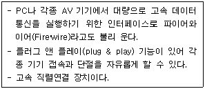
- USB
- IEEE 802
- IEEE 1394
- PCMCIA
(정답률: 53%)
56. 다음 중 지리적으로 분산되어 있는 컴퓨터 지원을 초고속 인터넷 망을 통해 격자구조로 연결하여 공유함으로써 하나의 고성능 컴퓨터처럼 사용하는 방법은 어느 것인가?
- 그리드 컴퓨터(Grid Computing)
- 클라이언트/서버 컴퓨팅(Client/Server Computing)
- 가상 컴퓨팅(Virtual Computing)
- 유비쿼터스 컴퓨팅(Ubiquitous Computing)
(정답률: 38%)
57. 디지털 미디어 장비가 급속히 발전함에 따라 개인이 생산한 멀티미디어 콘텐츠가 인기를 끌고 있다. 다음 중 사운드(Sound) 기록 용량을 계산하는 식과 단위가 표시된 것은?
- 용량=(샘플링시간×샘플링 주파수×샘플링 비트수/8)Byte
- 용량=(샘플링시간×샘플링 주파수×샘플링 비트수×채널수/16)Byte
- 용량=(샘플링시간×샘플링 주파수×샘플링 비트수×채널수/8)Byte
- 용량=(샘플링시간×샘플링 주파수×샘플링 비트수/1024)KB
(정답률: 45%)
58. 다음 중 웹상에서 구조화된 문서를 전송 가능하도록 설계된 웹 표준 문서 포맷으로 사용자가 새로운 태그를 정의할 수 있는 기능이 추가되었으며 우리나라에서 채택하여 사용하고 있는 웹 문서 표준 형식은?
- XML
- SGML
- HTML
- HyTime
(정답률: 36%)
59. 다음 중 멀티미디어 파일에 대한 설명으로 옳지 않은 것은?
- BMP : 윈도우 운영체제의 표준 이미지 형식으로 비트맵 정보를 압축하지 않고 저장한다.
- TIFF : 응용 프로그램 간의 그래픽 데이터의 교환을 위해 개발된 형식으로 트루컬러로 표현이 가능하다.
- JPG : 동영상 압축을 위한 국제 표준으로 손실과 무손실 압축 기법이 가능하다.
- GIF : 통신으로 그래픽을 전송하기 위해 고안된 형식으로 애니메이션 기능이 가능하다.
(정답률: 51%)
60. 오디오, 비디오, 이미지 등의 디지털 콘텐츠에 사람의 육안으로는 구별할 수 없도록 저작원의 정보를 삽입하여 불법복제를 막는 기술을 무엇이라고 하는가?
- 워터마킹(Watermarking)
- 카피레프트(Copyleft)
- 카피라잇(Copyright)
- 스패밍(Spamming)
(정답률: 53%)